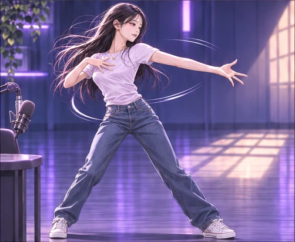
01화 〈마지막 인사〉 · 48컷
무대가 몸에 남아 있다
보랏빛 바닥 위로 팔과 다리가 대각선을 긋는다. 마지막 인사를 준비하는 지금의 올렛 뒤에, 오래 춤을 추어 온 사람이 겹쳐 보인다.
웹툰에서 이 장면 보기 →GODPAINTER’S VIEW
godpainter의 시선으로 고른 회차별 한 장면. 화면의 구도와 빛, 여백에 눈을 두고 다시 봅니다. 결말 장면이 포함돼 있어요.

01화 〈마지막 인사〉 · 48컷
보랏빛 바닥 위로 팔과 다리가 대각선을 긋는다. 마지막 인사를 준비하는 지금의 올렛 뒤에, 오래 춤을 추어 온 사람이 겹쳐 보인다.
웹툰에서 이 장면 보기 →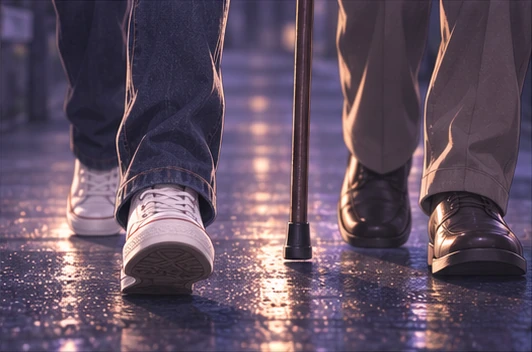
02화 〈막차〉 · 20컷
젖은 길에 두 사람의 발과 지팡이만 들어온다. 얼굴을 보지 않아도 올렛이 어르신의 속도에 맞춰 걷는다는 게 전해진다.
웹툰에서 이 장면 보기 →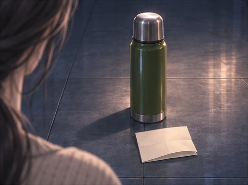
03화 〈새벽 다섯 시〉 · 40컷
문턱 바깥의 보온병과 쪽지에만 시선이 간다. 초인종을 누르지 않고 돌아간 언니의 마음이 작은 물건 두 개로 남는다.
웹툰에서 이 장면 보기 →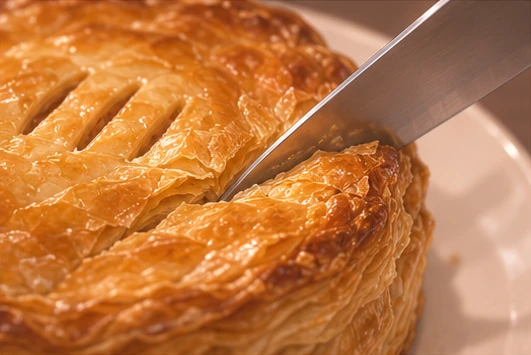
04화 〈올렛 파이〉 · 39컷
칼끝을 따라 파이의 결이 벌어진다. 한 컷을 멈춰 보고 있으면 지석이 반죽을 접고 기다렸던 시간이 되살아난다.
웹툰에서 이 장면 보기 →05화 〈고교 동창〉 · 18컷
세 친구가 같은 책상에 모였다. 각자의 눈매와 자세가 다르고, 그 차이 덕분에 오래 알고 지낸 친구들의 편안함이 더 잘 보인다.
웹툰에서 이 장면 보기 →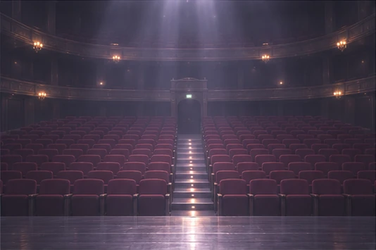
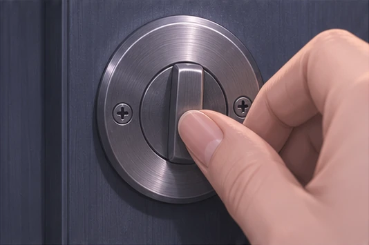
07화 〈방송 30초 전〉 · 48컷
자물쇠를 잡은 손이 화면을 가득 채운다. 올렛이 본 한 장면은 선명한데, 그 손이 왜 문을 잠갔는지는 화면 밖에 남아 있다.
웹툰에서 이 장면 보기 →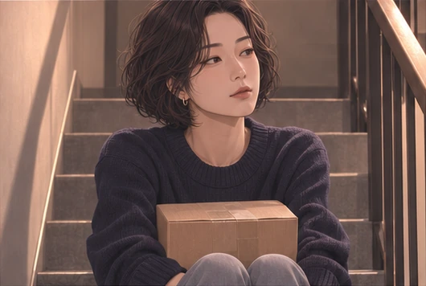
08화 〈제가 왜 문을 잠갔는지〉 · 38컷
상자를 무릎에 올린 사연자에게 계단의 여백이 길게 붙는다. 문 앞에서 그 사람이 얼마나 망설였는지 자세와 공간이 먼저 말한다.
웹툰에서 이 장면 보기 →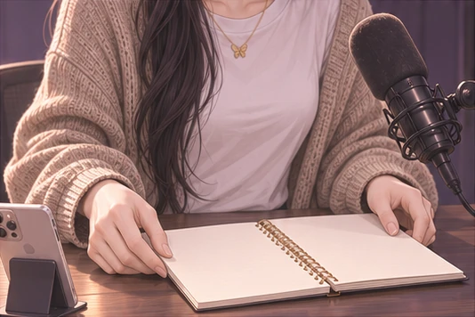
09화 〈식기 전에〉 · 64컷
마이크 옆의 공책이 펼쳐져 있다. 방송의 속도를 바꾸려는 결심이, 빈 칸을 남겨 두는 작은 손동작으로 보인다.
웹툰에서 이 장면 보기 →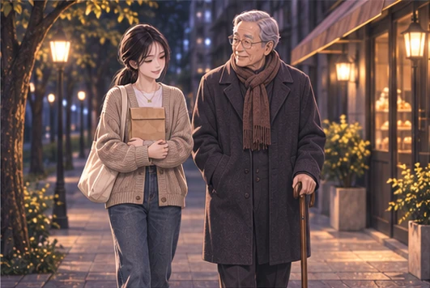
10화 〈같이 걸어요〉 · 14컷
밤길을 나란히 걷는 두 사람 뒤로 가게의 불빛이 이어진다. 막차에서 시작된 만남이 이번에는 같은 보폭으로 돌아온다.
웹툰에서 이 장면 보기 →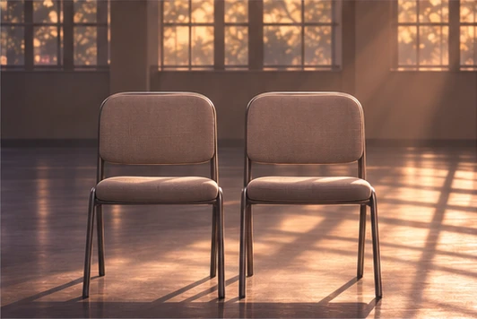
11화 〈두 사람의 이야기〉 · 75컷
아침빛이 빈 의자 두 개 아래로 길게 뻗는다. 서로 마주 보며 다퉜던 두 사람이 다시 함께 앉을 자리가 생겼다.
웹툰에서 이 장면 보기 →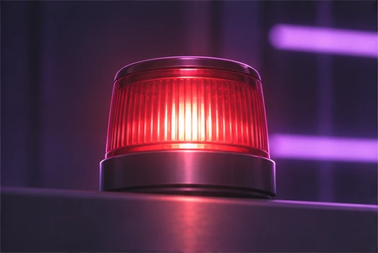
12화 〈다시 켜진 마이크〉 · 22컷
보라색 방송실 속 작은 붉은 불이 화면을 채운다. 전화 한 통을 받기로 한 결정이 손끝에서 시청자 쪽으로 건너가는 순간이다.
웹툰에서 이 장면 보기 →13화 〈남겨 둔 침묵〉 · 50컷
헤드폰을 내려놓은 올렛의 시선이 정면에 닿는다. 말풍선이 끝난 뒤 여백까지 읽어야 그녀가 남긴 침묵의 길이가 느껴진다.
웹툰에서 이 장면 보기 →14화 〈대답하기 전에〉 · 49컷
정면을 보는 눈과 옆의 마이크만으로 인터뷰의 긴장이 남아 있다. 이 얼굴에서 올렛은 그날 왜 기다렸는지 자기 말로 답한다.
웹툰에서 이 장면 보기 →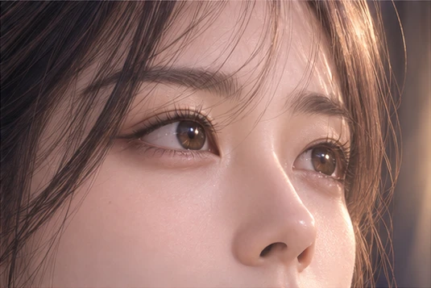
15화 〈커튼 너머〉 · 73컷
올렛의 눈동자에 조명이 비친다. 무대 전체를 보여 주던 컷이 눈 하나로 좁아지자 봉투가 열린 뒤의 시간이 길게 느껴진다.
웹툰에서 이 장면 보기 →
16화 〈다음 목소리〉 · 48컷
눈물이 볼을 타고 내려오지만 시선은 객석을 향한다. 수상의 기쁨이 다음 시청자를 기다리겠다는 약속으로 바뀌는 순간이다.
웹툰에서 이 장면 보기 →